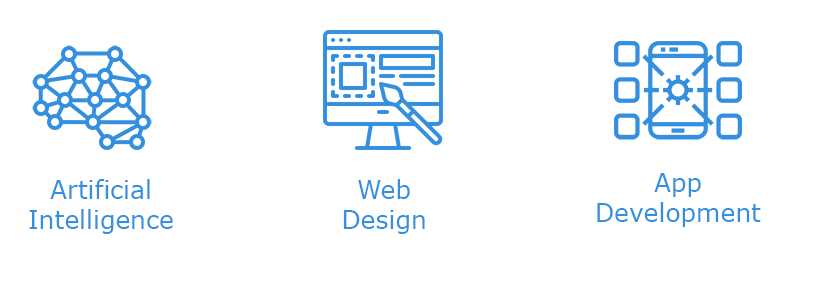

About Me
OBJECTIVES AND GOALS
I am seeking a challenging position in the field of Artificial Intelligence where I can utilize my skills to further work towards personal and professional development and contribute towards the prosperity of the organization. In the short term, one of my goals is to continue developing my programming and debugging skills. I want to improve my technical skills in order to complete my task effectively and effectively. In addition, I’ve been researching for neural network related work, I would love to be engaged in any AI related project if there's any chances given.
INTERESTS
